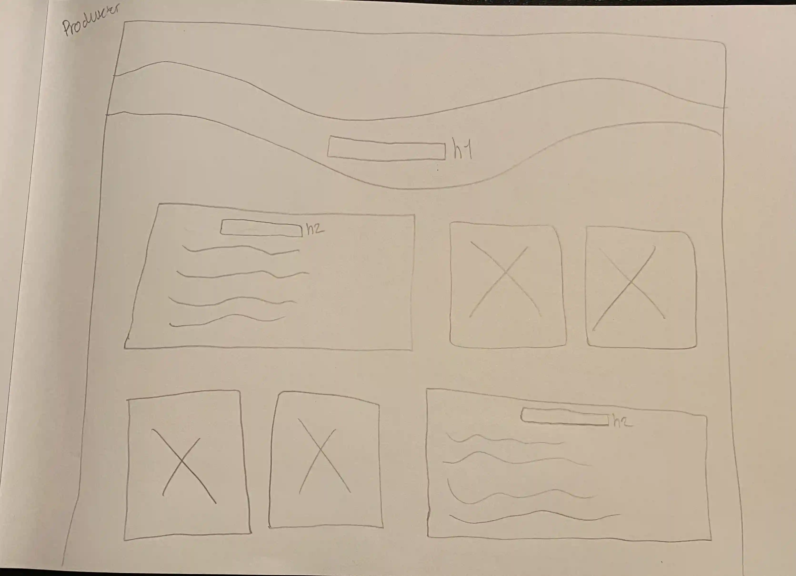
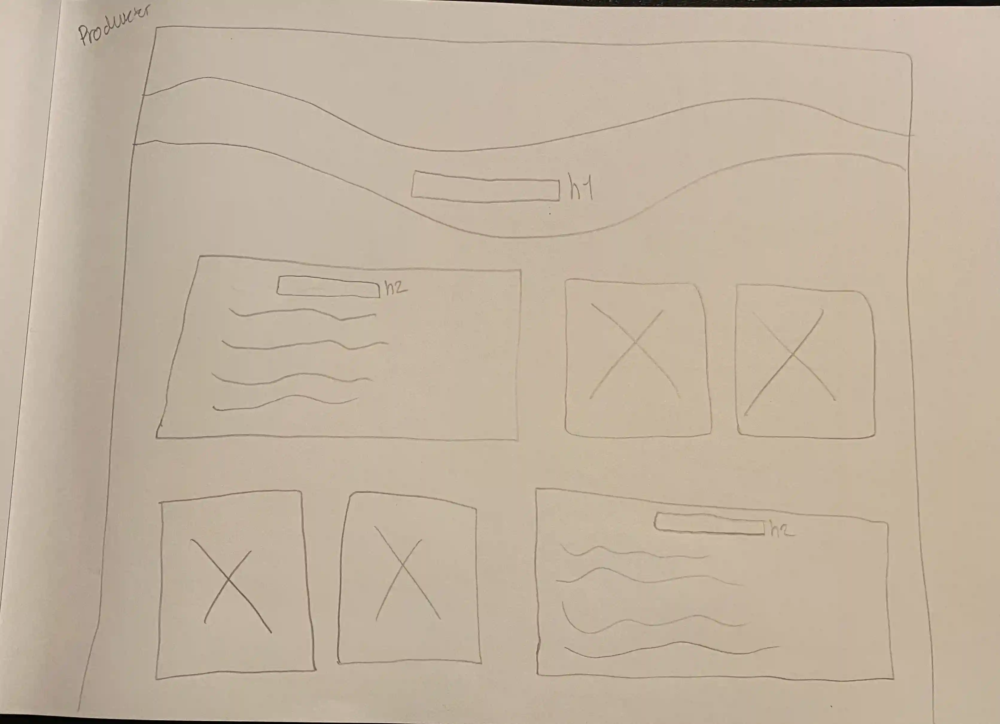
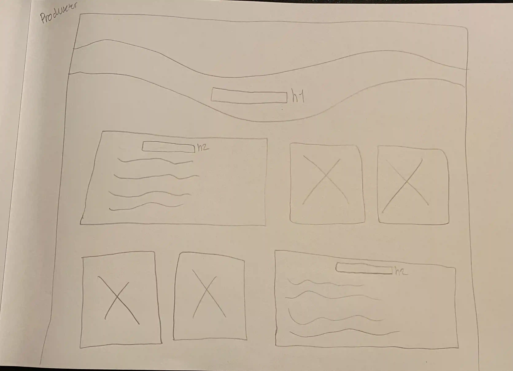

I tema 5, grundlæggende indhold, startede vi med at lave en lille opgave, som var et pilotsite og en pilotvideo.
Vi var ude og interviewe en person med en passion og skulle ud fra det lave en video. Her arbejdede vi i Premiere Pro og lærte bl.a. om forskellige klippeteknikker og hvordan man fjerner baggrundsstøj ved hjælp af Audition.

Herefter gik vi i gang med den store gruppeopgave, hvor vi skulle lave et redesign af en virksomhed og producere en video dertil.
Vi valgte at lave et redesign af “La Fresca”, som er en butik, hvor man kan købe frisk pasta, som man kan lave derhjemme.
Vi startede med at lave en BERT-test, som er en Bipolær Emotionel Respons Test, hvor man har to yderpunkter for eksempel god og dårlig, som tester brugerens holdninger. Vi brugte det til at teste La Frescas website, og hvordan brugeren oplevede siden. Her blev det meget tydeligt, at butikkens koncept ikke stod klart ved første øjekast.
Vi blev introduceret til Trello, som vi brugte til at planlægge vores uger med, så vi kunne se, hvad vi skulle lave, hvad vi var i gang med og havde lavet.
Vi blev også introduceret til Git-hub, som vi brugte til at kunne kode fælles og dermed undgå at overskrive hinandens kode.
Der var bl.a. en smule tvivl om, hvorvidt det var en restaurant eller en butik/shop. Derfor har vi prøvet at gøre det lettere at se, at det er en butik, hvor man kan købe pasta, som man selv tilbereder derhjemme - og altså ikke en restaurant. Det har vi bl.a. gjort ved, at det store forsidebillede er et billede fra butikken, hvor man kan se den rå pasta. Vi har også lavet en lille guide på forsiden, som viser, at man bestiller pastaen online, henter det i butikken samme dag, tager hjem og koger det i de anviste minutter - og så er maden klar.
Derudover viser det nye site et bedre overblik over, hvilke forskellige udvalg de har af pasta, saucer og hvad priserne ligger på, hvilket gør det lettere for kunderne, at se hvad udvalget er hjemmefra. Før kunne man kun se udvalget på deres Instagram eller ved at komme fysisk ned i butikken. Men da det ikke er alle der har Instagram, synes vi, at det ville være bedre at implementere det på sitet.
Vi startede med at lave hver vores moodboard og derefter lavede vi et fælles moodboard ud fra vores individuelle idéer.
Vi lavede herefter wireframes, layoutdiagrammer, sitemap og en mockup, så vi var sikre på, at vi alle havde det samme at gå ud fra.
Vi opdelte siderne, så vi hver især stod for en html side. Jeg stod for siden om produkterne, altså “selection”. Herudover tegnede jeg også de tre forskellige typer pasta og saucen til forsiden under “Your choice”, i Illustrator.
Vi blev også introduceret til SCRUM, hvor vi, hver gang vi mødtes, havde et stående møde om, hvor langt vi var kommet, hvad vi hver især havde nået og hvad vi skulle lave på dagen.
Til opgaven var vi også ude at tage billeder og filme til et interview, som vi ville implementere på websitet under “about”. Vi forberedte os hjemmefra med spørgsmål og brugte interview-teknikkerne, vi havde lært ved pilotvideoen og i tema 3. Vi lavede også en video til deres Instagram, da det er det sociale medie de bruger mest - her stod jeg for at filme i højformat til den video. Efterfølgende delte vi arbejdet op, så dem der havde de mere simple sider på websitet stod for redigering af videoerne.
Vi har efterfølgende fået sendt vores redesign og videoer til ejerne af La Fresca, og de var meget importeret over vores arbejde. De sagde også, at det gav et godt perspektiv til, hvad de i øjeblikket mangler på deres website.